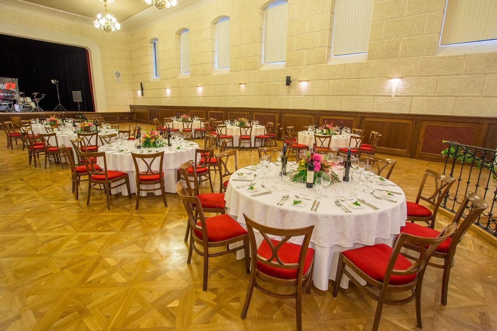
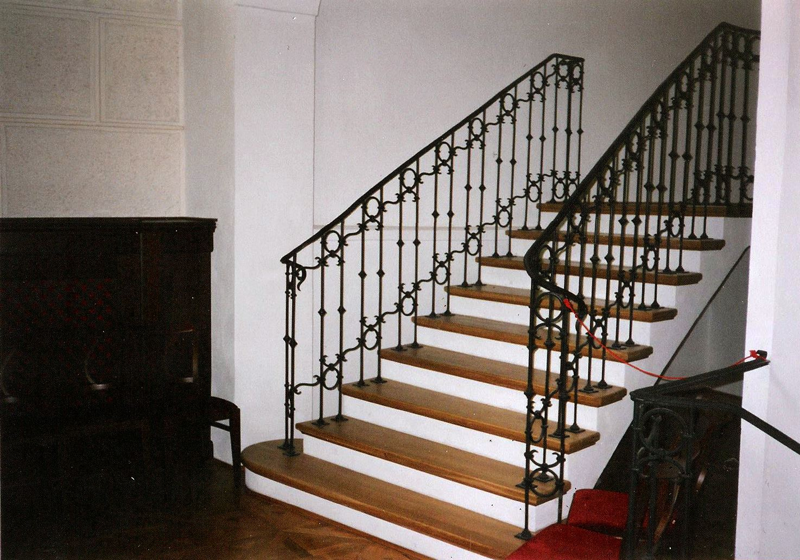
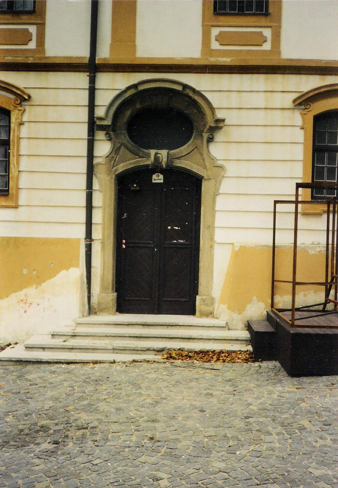
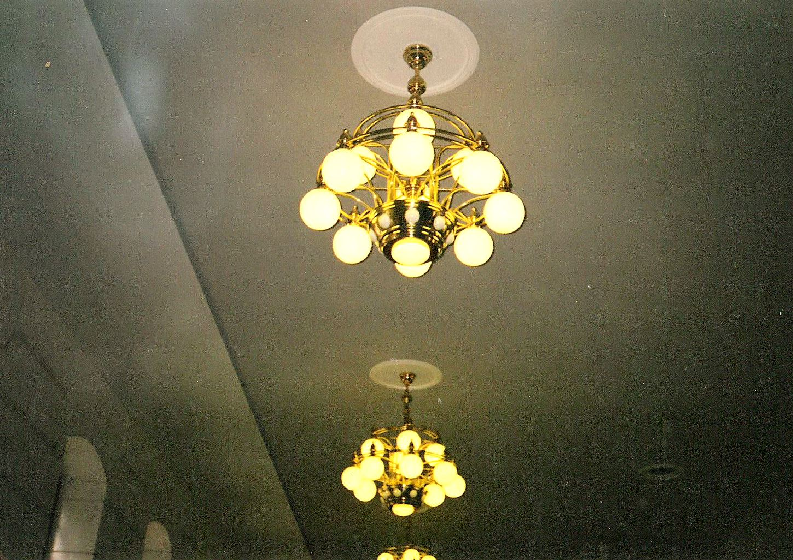
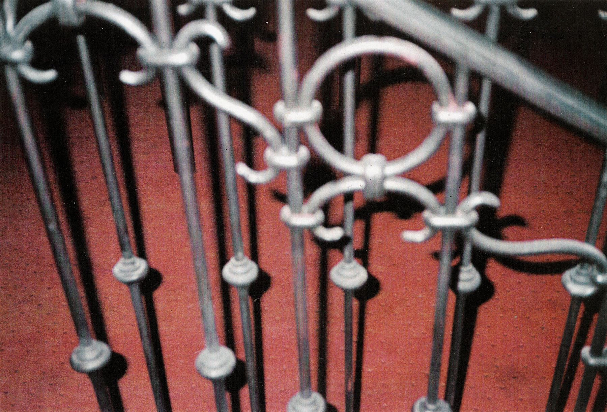
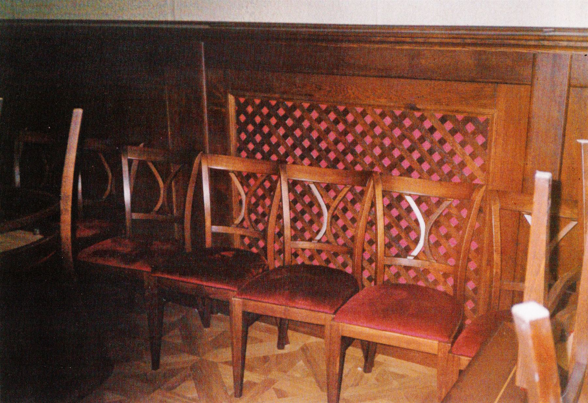

1998–1999 Rekonstrukce
Zámecký sál
Zámek Mikulov
Rekonstrukce a adaptace velkého sálu mikulovského zámku – interiér sálu a vstupních prostor včetně kovaných zámeckých bran.
Rok1998–1999
MístoZámek Mikulov
TypRekonstrukce a adaptace interiéru
StavRealizováno
RozsahInteriér sálu a vstupních prostor, kované brány
SpolupráceIng. arch. Štěpán Děnge

01 O projektu
O projektu
Velký zámecký sál v Mikulově dostal na konci 90. let novou podobu. Návrh řešil interiér sálu i vstupních prostor – od zábradlí schodiště a osvětlení po nábytek.
Součástí zakázky byly i kované zámecké brány. Projekt vznikl ve spolupráci s Ing. arch. Štěpánem Děngem.
02 Fotografie
Realizace
6 fotografií · klikněte pro zvětšení






03 Výkresy a skici
Práce na výkresech
Velkoformátové výkresy sálu a kompozice z monografie.